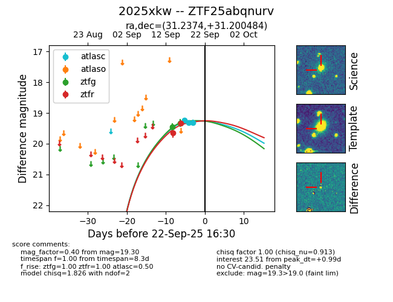
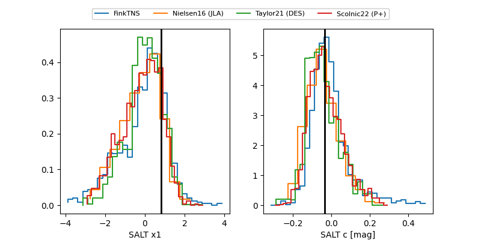

FINK: ZTF25abqnurv
Lasair: ZTF25abqnurv
ALeRCE: ZTF25abqnurv
TNS: 2025xkw
YSE: 2025xkw
ZTF25abqnurv (ztf,fink)
2025xkw (tns,yse)
equatorial (ra, dec) = (31.2374,+31.20048)
galactic (l, b) = (140.9078,-29.09236)


last atlasc=19.30, ztfg=19.33, ztfr=19.34
3 atlasc, 2 ztfg, 2 ztfr detections